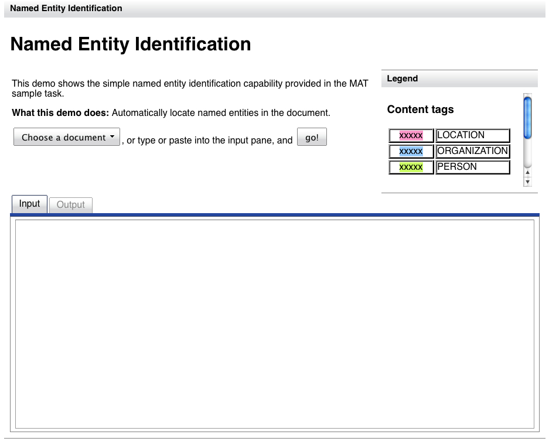
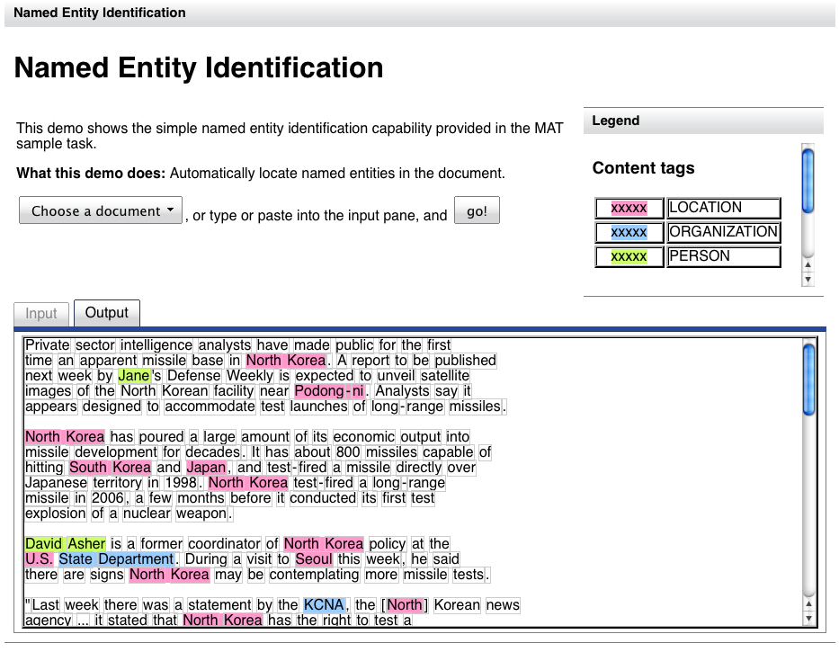

In Tutorial 3, you saw how having
a default model in your task enabled you to do automated tagging
in the UI after you build a model. In this tutorial, we're going
to explore, briefly, the Web demo capability which sometimes also
depends on the default model.
In this tutorial, we're going to make use of the models we build
in Tutorial 2.
See the section on starting the UI in Tutorial 1.
When you define a task, you can also define a file called
demo.xml which describes a demo of your task. In addition to the
default URL for the annotation desktop, for each task which has a
demo.xml file the Web server makes available the URL
http://localhost:7801/tasks/<lastpathcomponent>/demo, where
<lastpathcomponent> is the last path component of the path
to your task. That is, if your task is located in the
/path/to/mytask directory, <lastpathcomponent> will be
mytask.
For the sample task, found in MAT_PKG_HOME/sample/ne, you'll surf
to http://localhost:7801/tasks/ne/demo.
You'll see a window like this:

This demo gives you the option of selecting a file to tag from a
list, or of typing in some text.

Toggle between the "Input" and "Output" panes to compare the raw
and tagged documents.
If you're not planning on doing any other tutorials, and you
don't want the "Named Entity" task hanging around, remove it as
shown in the final step of Tutorial 1.